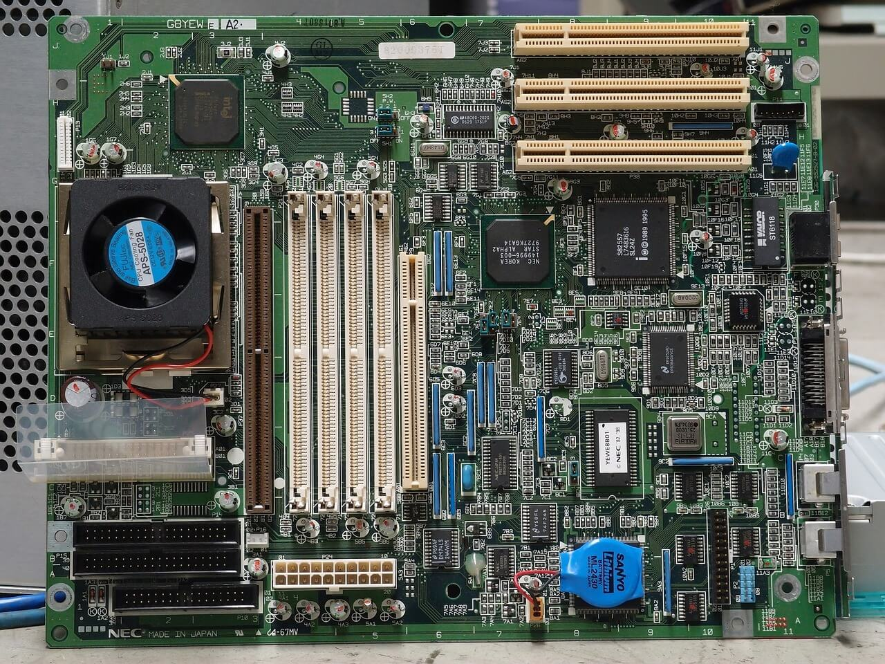

This is an example of a motherboard from the 1990s. Since components were not as developed and not as powerful, they took less power, meaning smaller PSUs and smaller coolers as there was not as much heat produced by components. This is also shown by the CPU cooler being tiny in the picture. Older components also used more rare materials for conductivity in the motherboard and other components. Nowadays, consumer motherboards are rarely green, but usually black, grey or plain colours to save the cost on the PCB of the motherboard. One thing we are lucky to have moved passed, is the fact that fans used to be VERY LOUD as the bearings used are not as advanced as the ones used in today's desktops, laptops and servers.
BACK TO HOMEPAGE